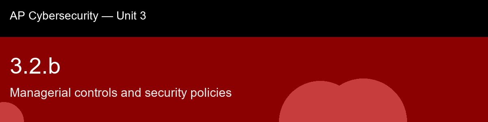

3.2.b, Managerial controls and security policies
Before class today. Security controls are commonly grouped into three families, and the AP course expects you to be
able to sort any given control into the right one. Technical (logical) controls are implemented
in hardware or software and enforce policy automatically, without a person deciding case-by-case, a firewall rule, WPA3 encryption (3.2.a), or an access-control list are all technical controls.
The intuition to hold onto: The habit worth building before this lecture: whenever you meet a new control anywhere in this course, ask "is this a piece of hardware or software enforcing something automatically, or is this a document telling a human what they're supposed to do?" That one question is the entire managerial-versus-technical-versus-physical sort, and it matters because this skill is explicitly calling out a bias most students (and most real organizations) have without realizing it: technical controls feel like "real security" and policy feels like paperwork, when in practice policy is usually what determines whether the technical controls even stay configured correctly.
A myth worth busting before we start: "A policy is not a real control unless it's enforced by software." → Managerial controls are a distinct, legitimate control family (alongside technical and physical). A signed AUP, documented access-review cadence, or completed awareness training all count as controls in their own right, even though none of them are software.
Today's goal: Distinguish managerial (administrative) controls from technical and physical controls, describe the purpose of core security policy documents (AUP, least privilege, security awareness training), and match a given organizational scenario to the correct control type and policy.
Handout: pre-lecture-handout.docx.

## 3.2.b, Managerial controls and security policies
**Before class today.** Security controls are commonly grouped into three families, and the AP course expects you to be
able to sort any given control into the right one. **Technical (logical) controls** are implemented
in hardware or software and enforce policy automatically, without a person deciding case-by-case, a firewall rule, WPA3 encryption (3.2.a), or an access-control list are all technical controls.
**The intuition to hold onto:** The habit worth building before this lecture: whenever you meet a new control anywhere in this course, ask "is this a piece of hardware or software enforcing something automatically, or is this a document telling a human what they're supposed to do?" That one question is the entire managerial-versus-technical-versus-physical sort, and it matters because this skill is explicitly calling out a bias most students (and most real organizations) have without realizing it: technical controls feel like "real security" and policy feels like paperwork, when in practice policy is usually what determines whether the technical controls even stay configured correctly.
**A myth worth busting before we start:** "A policy is not a real control unless it's enforced by software." → Managerial controls are a distinct, legitimate control family (alongside technical and physical). A signed AUP, documented access-review cadence, or completed awareness training all count as controls in their own right, even though none of them are software.
**Today's goal:** Distinguish managerial (administrative) controls from technical and physical controls, describe the purpose of core security policy documents (AUP, least privilege, security awareness training), and match a given organizational scenario to the correct control type and policy.
Handout: `pre-lecture-handout.docx`.